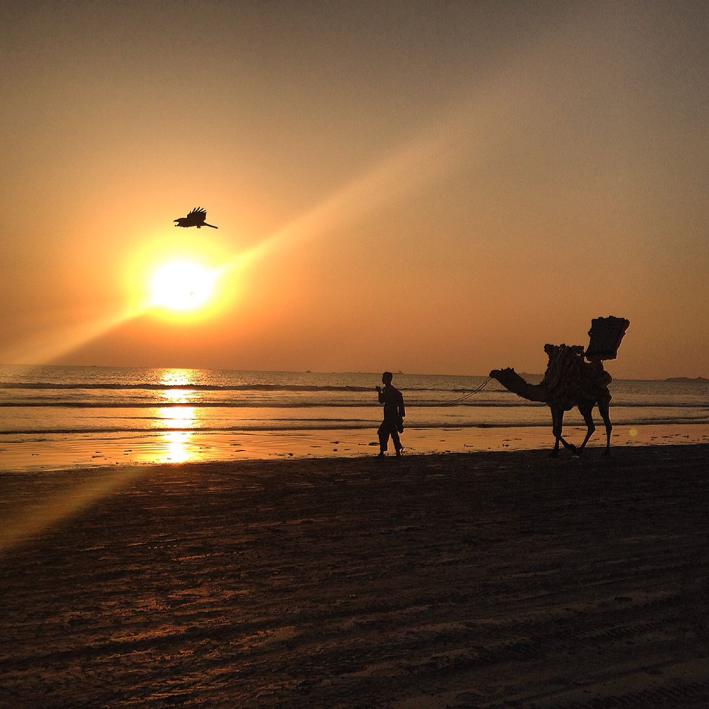
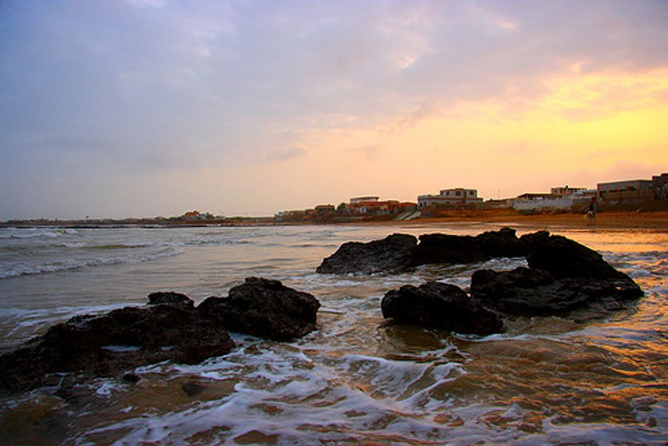
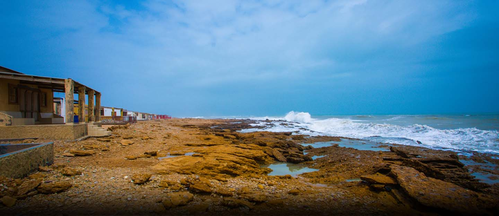
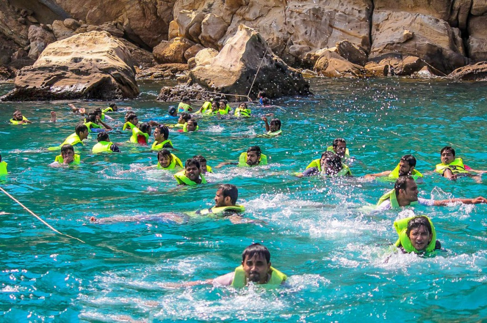
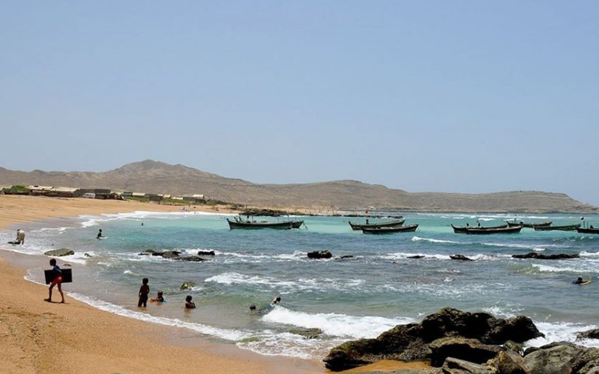

popular Beaches:

Clifton Beach
Clifton Beach, also known as Sea View, is a beach in Karachi, Sindh, Pakistan and is located on the Arabian Sea. It stretches from Karachi to Ormara (Balochistan).
timing:12pm-12am
location:Q34W+P9R، road، D.H.A. Phase 8 Zone C Phase 8 Karachi, Karachi City, Sindh 75500
×

Hawke's Bay
Hawke's Bay or Hawkesbay is a beach in Karachi, Sindh, Pakistan, located 20 km southwest of Karachi city The beach is named after Bladen Wilmer Hawke,
timing:12pm-12am
location:Q34W+P9R، road، D.H.A. Phase 8 Zone C Phase 8 Karachi, Karachi City, Sindh 75500
×

French Beach, Karachi
French Beach of Karachi is located half way between Hawkes Bay and Paradise Point, is a small fishing village frequented by Karachi's elite class and known
timing:12pm-12am
location:Q34W+P9R، road، D.H.A. Phase 8 Zone C Phase 8 Karachi, Karachi City, Sindh 75500
×Manora, Karachi
Manora was formerly an island, but due to silting is now connected to the mainland by a 12 kilometer long natural sandbridge known as Sandspit.
timing:12pm-12am
location:Q34W+P9R، road، D.H.A. Phase 8 Zone C Phase 8 Karachi, Karachi City, Sindh 75500
×Turtle Beach
Turtle Beach Karachi is a very famous tourist spot and Picnic place in Karachi. Its a Naturally Sandy Beach where no rocks and reefs. The located between Hawksbay and Sandspit
timing:12pm-12am
location:Q34W+P9R، road، D.H.A. Phase 8 Zone C Phase 8 Karachi, Karachi City, Sindh 75500
×

Churna Island
Charna Island is located near Mubarak Goth, Kiamari Town in Karachi, Sindh, Pakistan. Churna Island is a small, uninhabited island located in the Arabian Sea,
timing:12pm-12am
location:Q34W+P9R، road، D.H.A. Phase 8 Zone C Phase 8 Karachi, Karachi City, Sindh 75500
×
Sunehra Beach
Sunehra Beach Karachi (Golden Beach) is a wonderful beach for Families, located near Gaddani, Mubarak village (Goth) Road, Sindh, Pakistan. It is 43.2 Km far from Karachi city and cover the distance about 1 hour 27 min
timing:05:00 AM - 07:00 PM
location: Gaddani, Karachi
×

Mubarak Village Beach
Mubarak Village Beach Resort, Karachi, Pakistan. 7372 likes · 65 talking about this · 52621 were here. Mubarak Goth or Mubarak
timing:3:26am–5pm
location: Suparco road, Mubarak Goth Rd, Mubarak Keamari, Karachi, Sindh
×French Beach
French Beach of Karachi is located half way between Hawkes Bay and Paradise Point, is a small fishing village frequented by Karachi's elite class and known to the locals as Haji Ismill Goth.